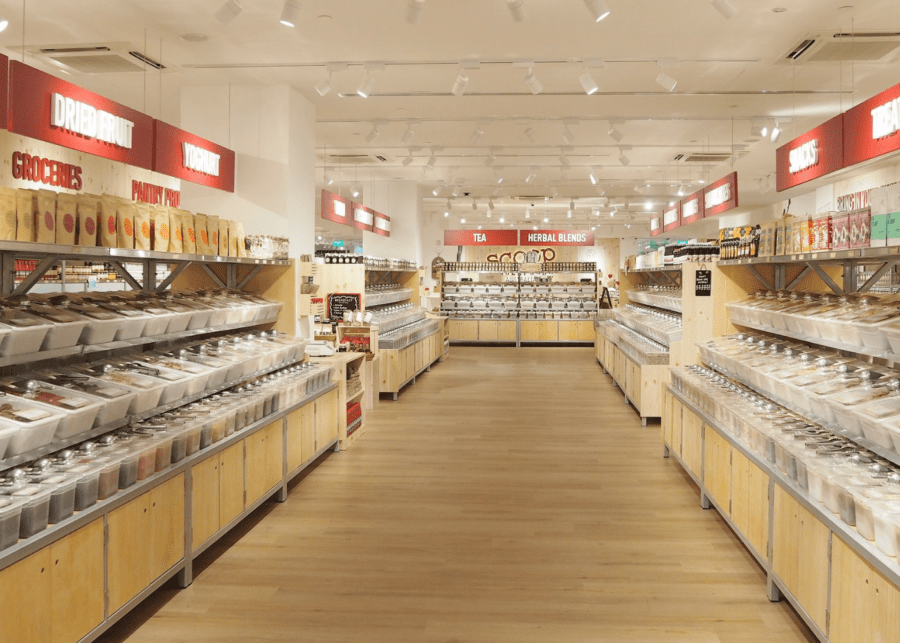

KIMB'Z SUPERMARKET
OUR PRODUCTS
From kids’ accessories and apparel to cleaning products and electronics,
you can find pretty much anything you need at LuLu’s many outlets.
Here’s a list of product categories available at the brand’s online store
and their brick & mortar outlets

ELECTRONICS
Customers can purchase a range of electronic items.
Whether you’re looking for the latest cameras,
high-end computer devices or mobile phones, Lulu stores have it all.
FRESH FOOD
These stores have a section for fresh foods where consumers can buy fresh fruits and vegetables. The store also
offers fresh juices, salads, bakery items, dairy products and so on
HOME APPLIANCES
There is also a vast collection of home and kitchen appliances at the hypermarket. These include washing machines, microwaves, electric kettles,
air purifiers, AC, cooking ranges and many other items.
FURNITURE AND HOME DECOR
The furniture and home decor category covers a list of products, including sofa sets,
mattresses, bedsheets, wall hangings, decoration pieces and more.
STATIONARY
Families with kids can visit any of the hypermarkets in the UAE to purchase stationery supplies. They can find schoolbags, watercolours,
calculators, staplers, marker sets etc., at all of the stores.